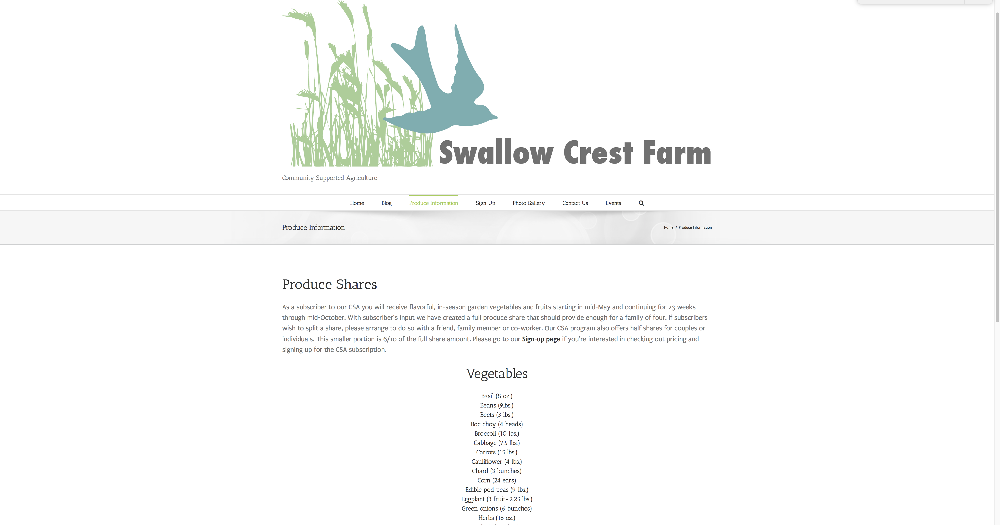
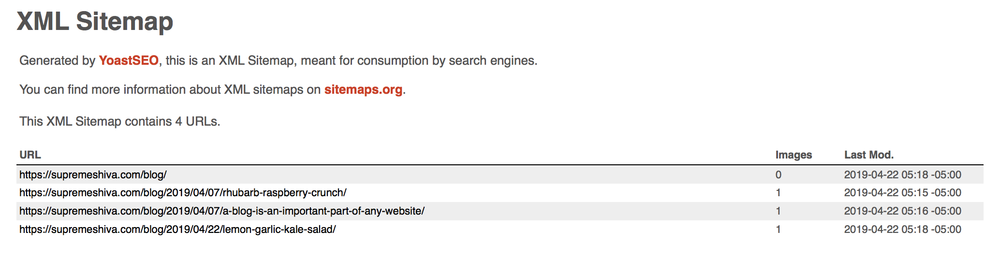

Projects page
This page is for projects in Interactive Web II.
At the bottom of the page is information about the Forever Friends Rescue project. Directly below is my information about my final project, the Supreme Shiva blog.
Here's the link to Supreme Shiva.
There were several inspiration websites for this project. One was , a page from the Krishna society. It has good navigation and great information about Shiva and other Hindu deities.
Another idea that gave my site inspiration would be Yoga Journal . Yoga sites should be rather simplistic as they are designed to give off information in an elegant way. YogaWorks.com is another example of this.There were also some content-specific websites that I looked at during the course of the project. One can be found here: Advaita-Vedanta.org . Another was this BBC article, referenced in my site. BBC Finally, this article had some great information in it about Shiva. Supreme Knowledge.org
Here is a link to the Forever Friends Rescue project. This page is password protected; the password is "password".
Link to Forever Friends RescueThis is a link to the Swallow Crest Farms project.
Swallow Crest Farms The purpose of this site was to create a nice looking website for a local farm to display their yearly CSA share offerings, and to allow potential customers to get in contact with the owners of the farm. Some of the parameters
included an online form, information about a 'pick your own' farm program, and an interactive map.
I used information given by the initiator of the project, Dawn. I used a couple online stock images as well. I used the Avada theme and a host of additional plugins.
Below, screenshots of the site and the Yeost sitemap.
 